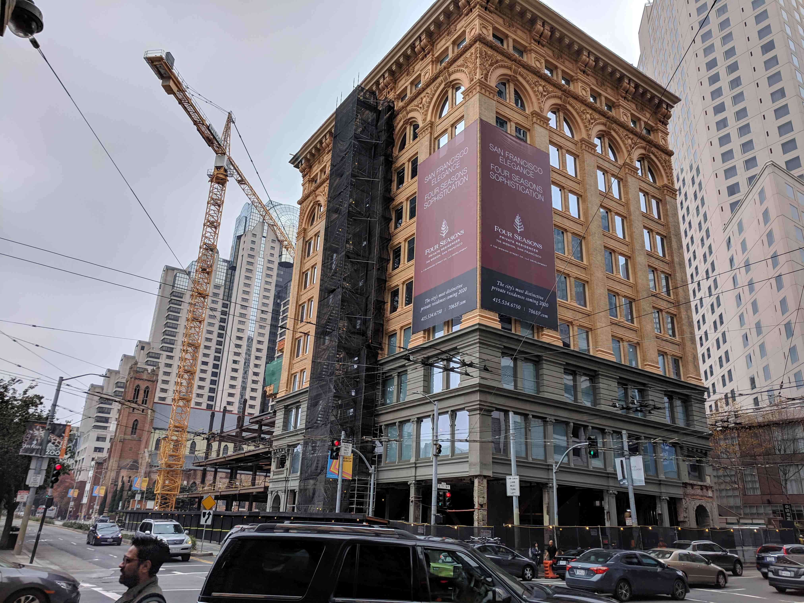
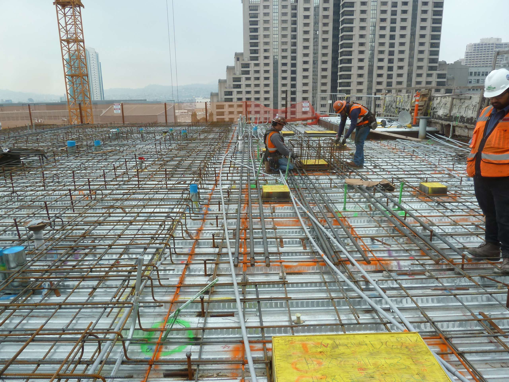
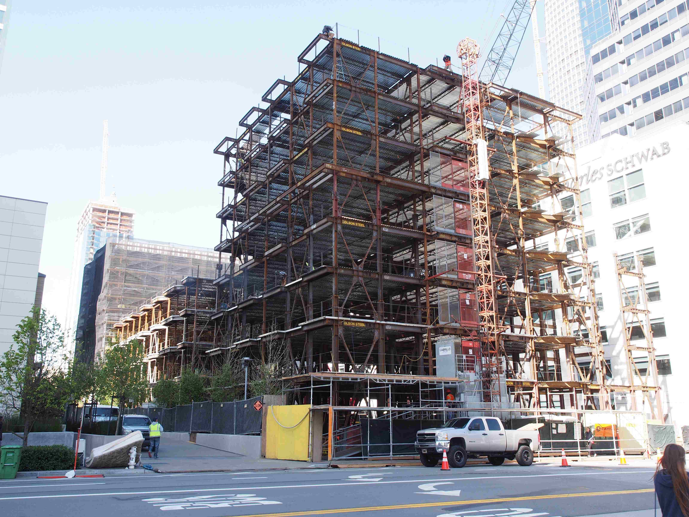
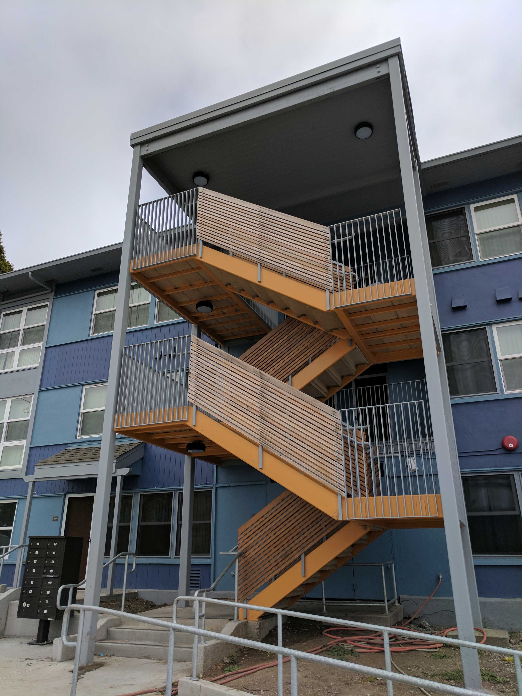
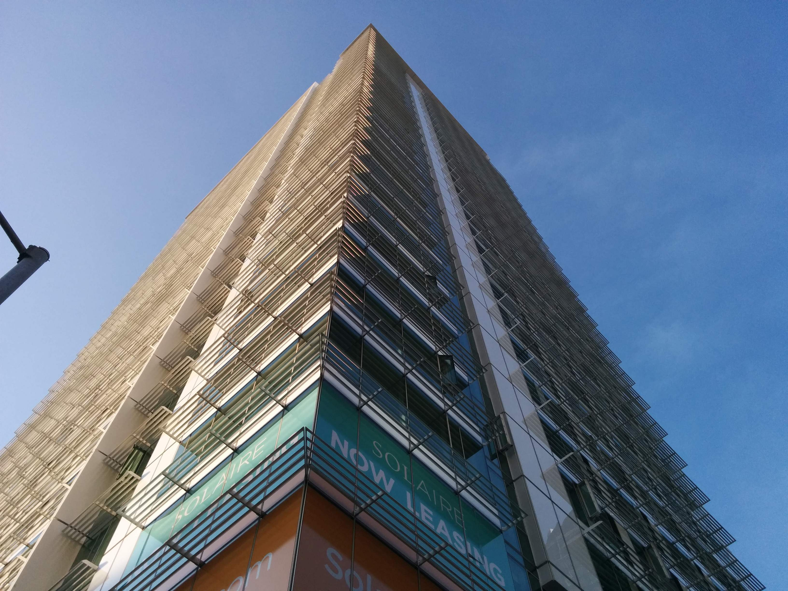
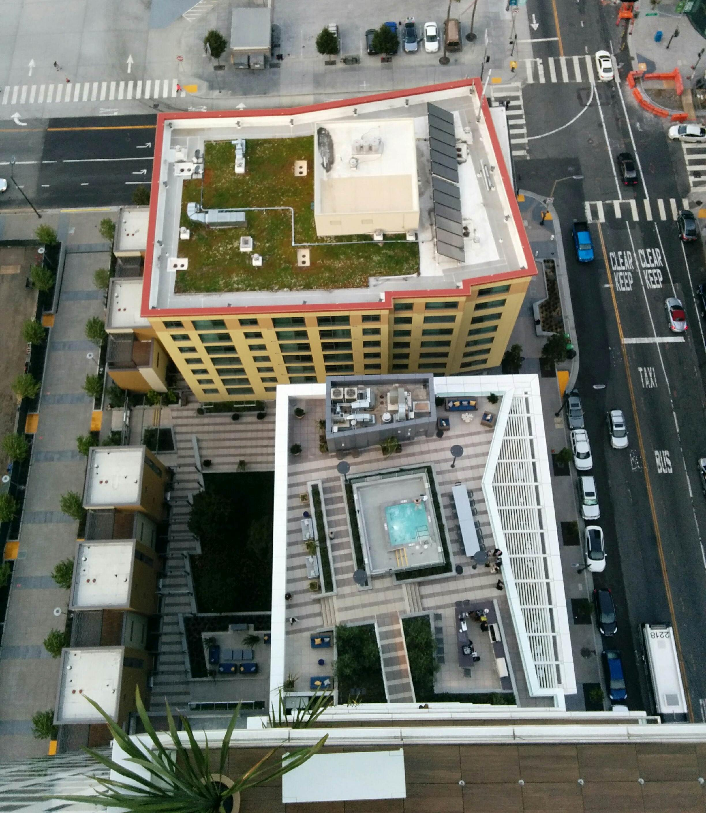
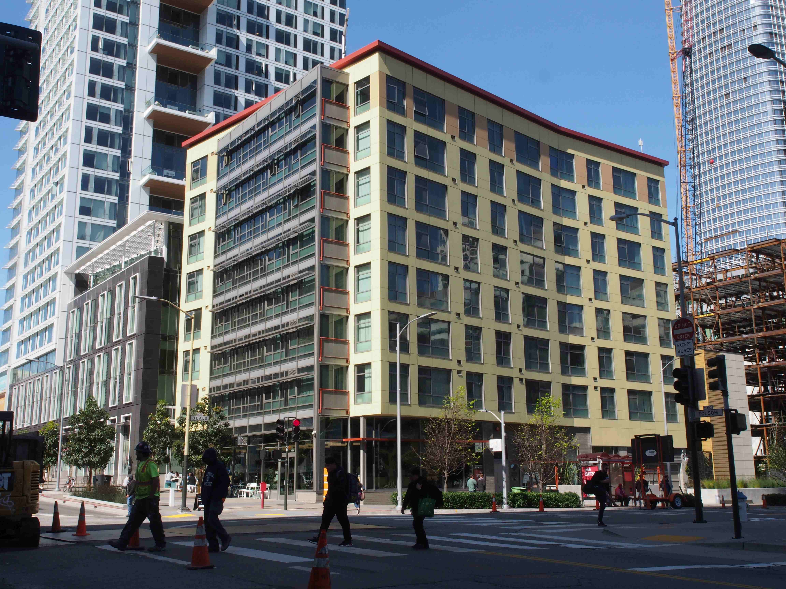
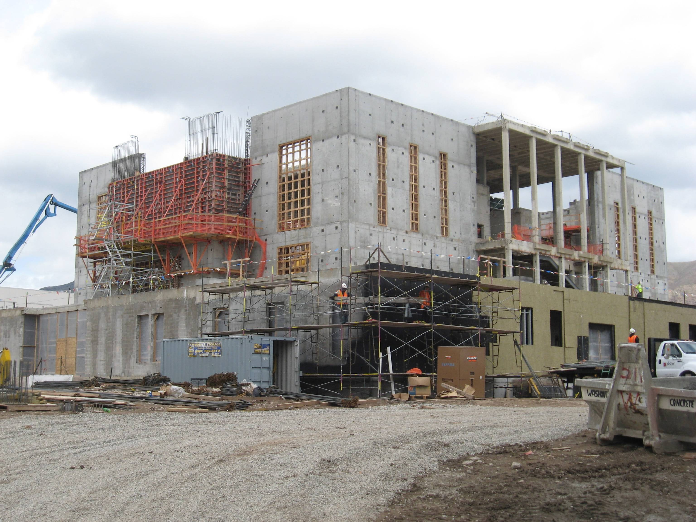
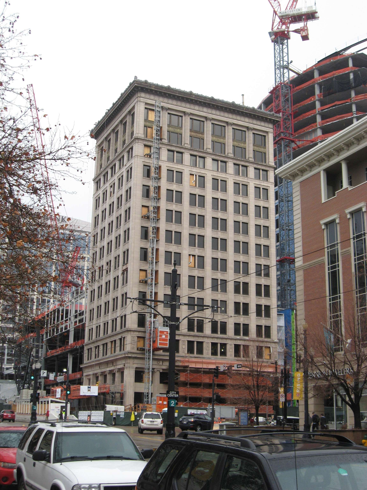
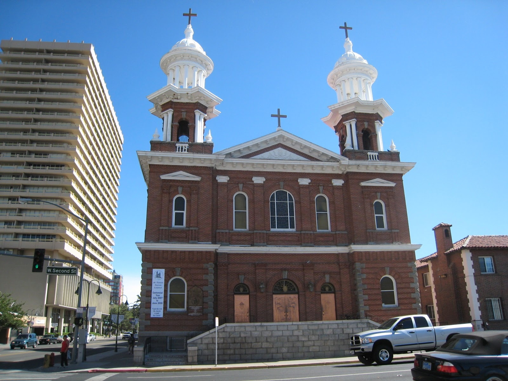

I'm a licensed Professional Engineer and Structural Engineer in California.
I worked as a structural engineer for about twelve years before leaving to pursue a career in computer science.
I got to work on a very wide variety of projects, from Hospitals to Houses, Temples to Towers. See below for a sample of what I worked on with most recent on top.
The historic Aronson Building in downtown SF. We renovated it to
connect to a new adjacent tower and to be the new home of The Mexican MuseumA new accesible roof for the Aronson BuildingNatalie Gubb Commons in downtown SF. Three buildings
and 120 units of affordable housingHunters Point East-West in San Francisco. Evaluating and renovating 213 units of affordable
housing in 42 buildingsThe Solaire Apartments. A 32 story tower and set of three story townhomes with
409 market-rate units in downtown SFView from roof of The Solaire Apartments of the adjacent Beale Street
Affordable Housing buildingBeale Street Housing building. Eight stories with 70 units
of affordable housingDramatic remodel and retrofit of the LDS temple in Ogden, UTSeismic retrofit of the Deseret Trust Building
in downtown Salt Lake CitySeismic retrofit and renovation of the St.
Thomas Aquinas Cathedral in Reno, NV